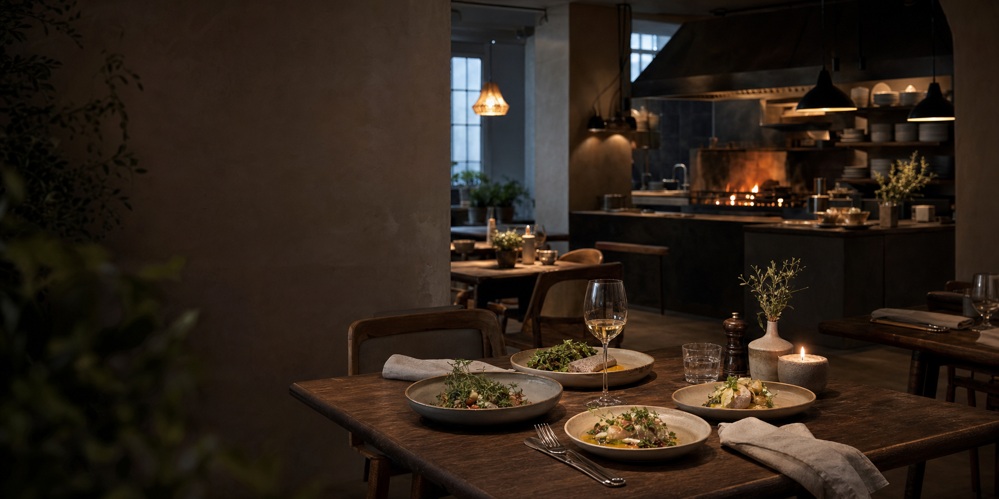
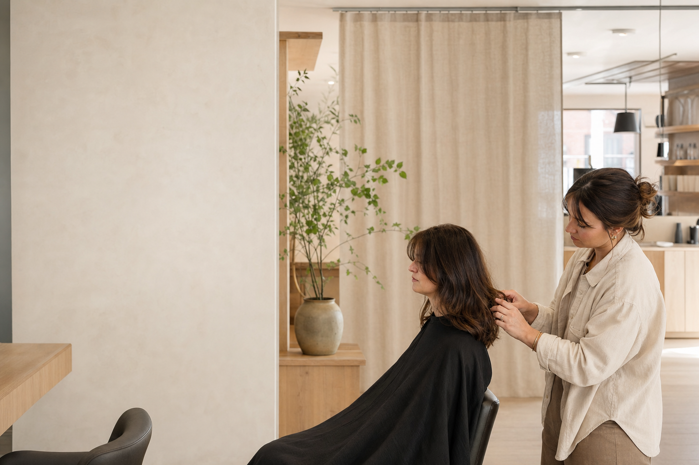

Digital studio in progress
Web · Workflows · AI · Stockholm, Sweden
Clearer outside. Smarter inside.
I help small businesses improve both the customer experience and the work behind the scenes — through web design, smarter workflows and practical AI.
Selected work
Two industries.
Two digital upgrades.
The first portfolio examples focus on web design. Future cases will also cover process improvement and AI-assisted automation.

View demo ↗
01
Restaurant · Concept project
Eld & Timjan
A warm neighbourhood restaurant website with flexible menus, local SEO and an accessible booking demo.
- Visual identity
- Responsive web
- Booking demo
02
Hair salon · Concept project
Studio Linnea
A calm, personal salon website with treatments, transparent pricing and a clear path to booking.
- Brand direction
- Mobile first
- Local visibility

View demo ↗
Services
Useful digital help,
where it matters.
Sometimes the need is a better website. Sometimes it is a repetitive task that should be simpler. We start with the problem, not the tool.
01Web design & visibility
Clear, fast and mobile-friendly websites with focused content, local visibility and a direct path to contact.
02Workflow mapping
We identify manual tasks, duplicated work and bottlenecks that waste time or create unnecessary friction.
03Automation & AI
Focused workflows for tasks such as summaries, drafts, follow-up or information handling — with human oversight.
04Continuous improvement
We measure what works, document the solution and improve it gradually without creating unnecessary tool dependency.
Process
A clear process.
No technology for its own sake.
You see and approve the work throughout the project. Your domain, data and business accounts always remain under your ownership and control.
- 01
Current state & goal
What takes time, creates friction or makes it harder for the customer or team to move forward?
- 02
Prioritised proposal
You receive a focused recommendation with clear value, scope and exclusions.
- 03
Build, test & feedback
The solution is tested on a small scale. Automated and AI-based steps should be reviewable before they have an effect.
- 04
Handover & improvement
We quality-check, document and make sure you own the solution and can develop it further.
About Lundgren Digital
Personal ownership,
practical results.
Lundgren Digital is run by me, Hannes Lundgren. I help small businesses with clear web experiences, smarter workflows and practical use of AI — focused on solutions that are understandable, safe and genuinely useful day to day.
The first public examples are web projects. The process and AI offering is being developed through clearly scoped pilot projects.